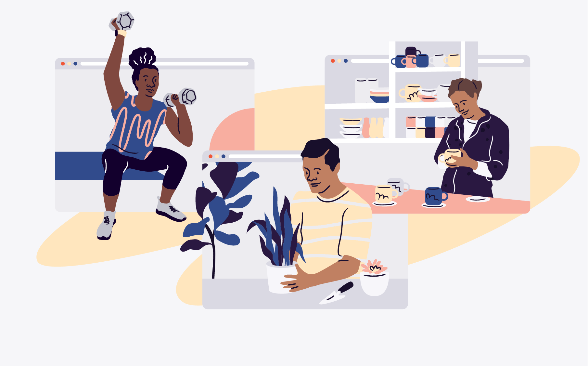

Some quick example text to build on the card title and make up the bulk of the card's content.
Book nowA seminar is organised with a specific target audience in mind and aims to convey highly relevant information. This type of event can be held at a community space, your company headquarters, or even online via a platform like Zoom or Vimeo. It’s typical for a single speaker, or a small number of speakers, to address the audience, so researching speakers and approaching potential sponsors should be high on your seminar planning checklist.
Conferences tend to be much more complex events with multiple speakers and sessions across a number of spaces within one or more venues. With the aim of encouraging conversations and offering people a platform to share their expertise, conferences are one of the most fruitful types of business networking events, usually beginning with a keynote session before moving to interviews, roundtables, and panel discussions. Preparing to welcome your guests can seem like a huge task, but the Eventbrite Organiser app can help with contact-free check-in and sales.
Trade shows offer a chance to showcase your latest product and introduce your brand to other businesses or the general public. As the focus is on displaying or exhibiting products, trade shows usually take place in spacious venues with room for lots of vendors. As a result, they present a great opportunity to generate sales leads.
While many business-to-business (B2B) events will fall into one of the three categories above, it’s important to consider the value of workshops and training sessions, too, as they can help businesses connect with both staff and the public. Whether you want to bring together employees to brainstorm ideas or help your target audience to better understand your product, these types of corporate events offer the equivalent of a collaborative classroom where the emphasis is firmly on learning.
A seminar is organised with a specific target audience in mind and aims to convey highly relevant information. This type of event can be held at a community space, your company headquarters, or even online via a platform like Zoom or Vimeo. It’s typical for a single speaker, or a small number of speakers, to address the audience, so researching speakers and approaching potential sponsors should be high on your seminar planning checklist.
A great event creator will always find an excuse to celebrate, and hosting a themed party can really help when it comes to making decisions around the types of event marketing, decorating, and catering that you opt for. From intimate gatherings to larger online events, a creative idea could be timeless – think Alice in Wonderland, superheroes, a murder mystery – or align with a particular date or fun occasion like Eurovision.
A webinar involves an online presentation to a virtual audience around a specific topic, whether it be academic, like a historical event, or business-focused, like a sales masterclass. And there’s usually time for a handy Q&A at the end. Often, there’s just one person presenting at a time, which makes the format especially suited to educational talks. There are plenty of great platforms for running a webinar, including Vimeo and YouTube.
From twerking to wine tasting, there’s an online class for almost everything. Extra points to consider for a virtual class are whether you need to send out samples (for food or drink tastings), if your students need any special tools (for a cookery or pottery class), and how well your technology works. For example, you may need to invest in higher-quality audio devices so that attendees can clearly hear you.